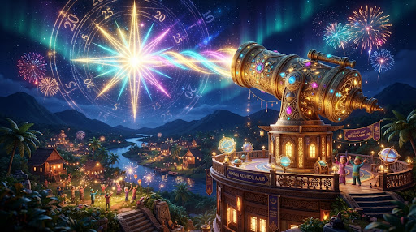
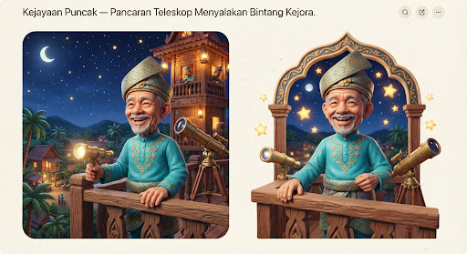
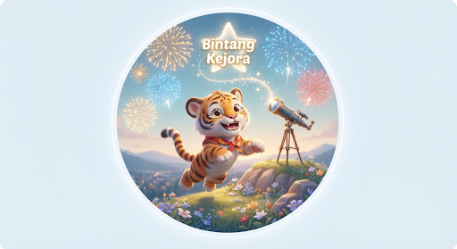

auto_awesome
Pencapaian Agung Tahun 1 KSSR
Bintang Kejora Menyala Berpancaran!
Nombor 20 Berjaya Melengkapkan Pola Bintang (5, 10, 15, 20, 25)!
star
5-5 Sahih!
star
Cerap Angkasa
star
Wira KSSR

🔭
Teleskop Kenanga: 100% Sempurna!
🌟
Kejora MENYALA!
🎆
Bunga Api Keraian Kampung Wira
calculate
Pola Menaik Lima-Lima
5
Langkah 1
10
Langkah 2
15
Langkah 3
20
TEPAT!
✨
Jawapan
25
Puncak
💡
Tahniah Wira! Pola menaik lima-lima lengkap: 5, 10, 15, 20, 25. Setiap lonjakan ditambah 5 biji batu bintang. Cahaya ilmu kini menerangi seluruh lembah Kampung Wira!
military_tech
Peti Khazanah Puncak Agung
Ganjaran Tamat Menara Nombor
trophy
Penakluk Menara
Lencana Emas Profil Wira
star
+300 Bintang
Penguasaan KSSR Penuh
paid
+500 Syiling
Dana Pembinaan Desa
crown
Mahkota Bestari
Kostum Eksklusif 3D


Tok Ketua & Si Rimau
Balai Cerap
"Syabas Wira Adam! Seluruh warga Kampung Wira mendongak ke langit melihat cahaya Bintang Kejora yang kamu nyalakan! Menara Nombor kini selamat dan berputar dengan harmoni!"